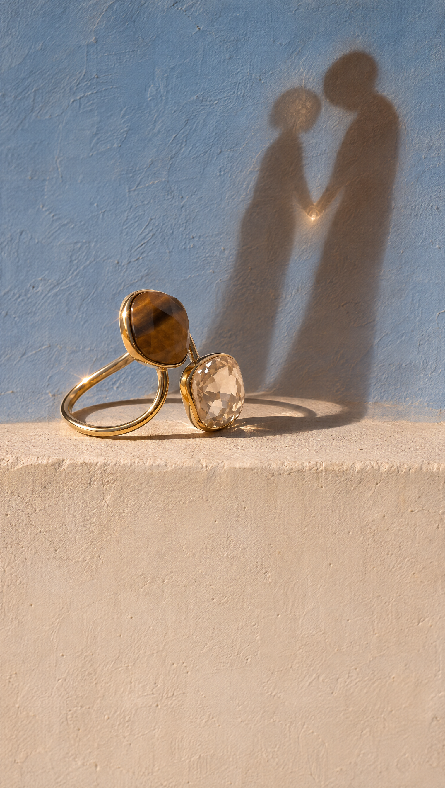

Halo Curve Ring. Tiger eye and pale champagne crystal · fits US 5 to 9
₹899Codes BUY2 · 10% off BUY3 · 20% off

tum aur main.
tum aur main.
tum aur main.
tum aur main.
tum aur main.
tum aur main.
Two stones.
3:58 PM
21 Dec
Sun 16°
Ring 17 mm inside
Shadow not included